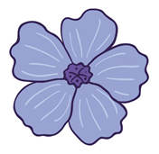

Василёк Синий
Василёк — это род растений семейства Астровые, чаще всего однолетних или двулетних, с прямым стеблем и соцветиями-корзинками. Чаще всего его знают по ярко-синим цветам, но встречаются также белые, розовые, жёлтые и фиолетовые оттенки.